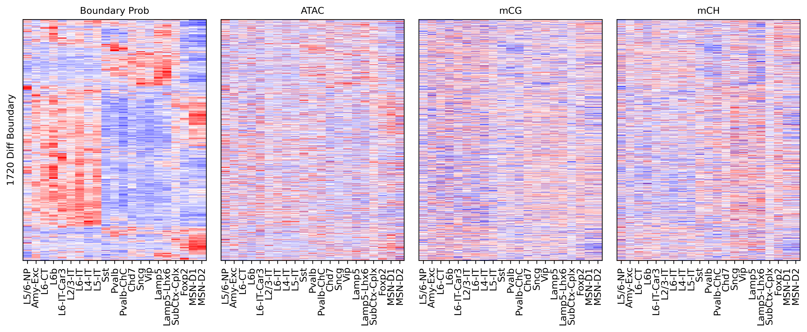
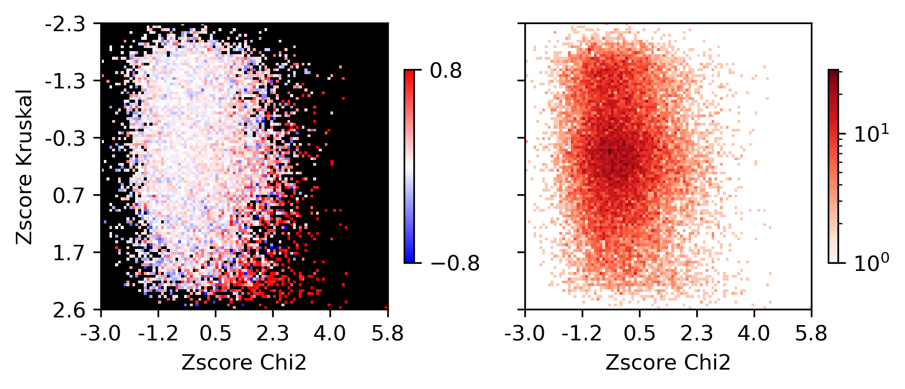
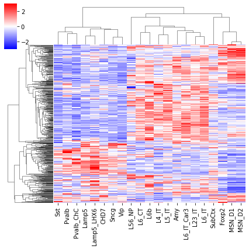
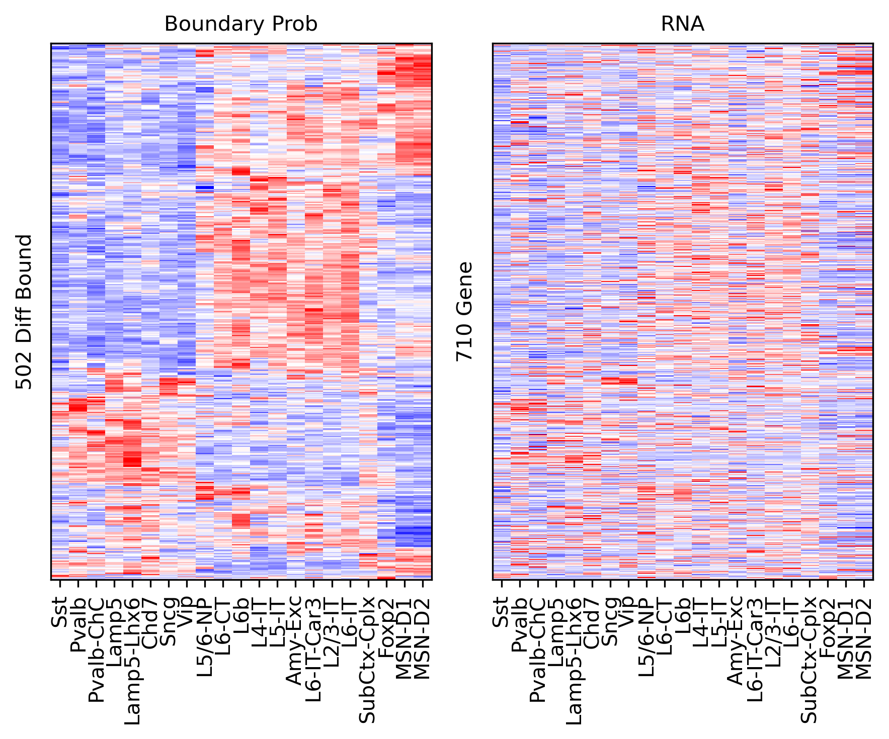
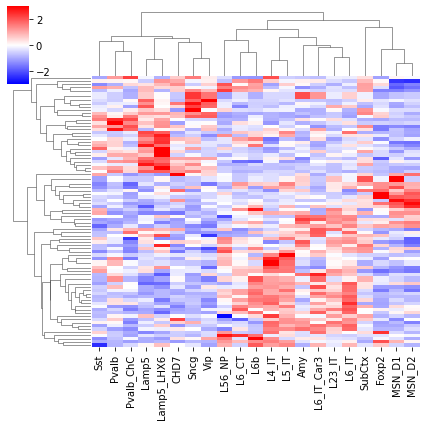
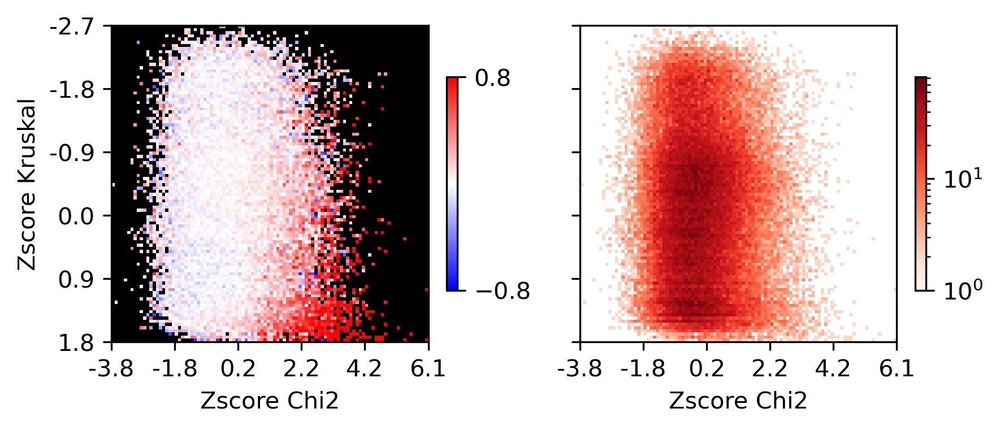
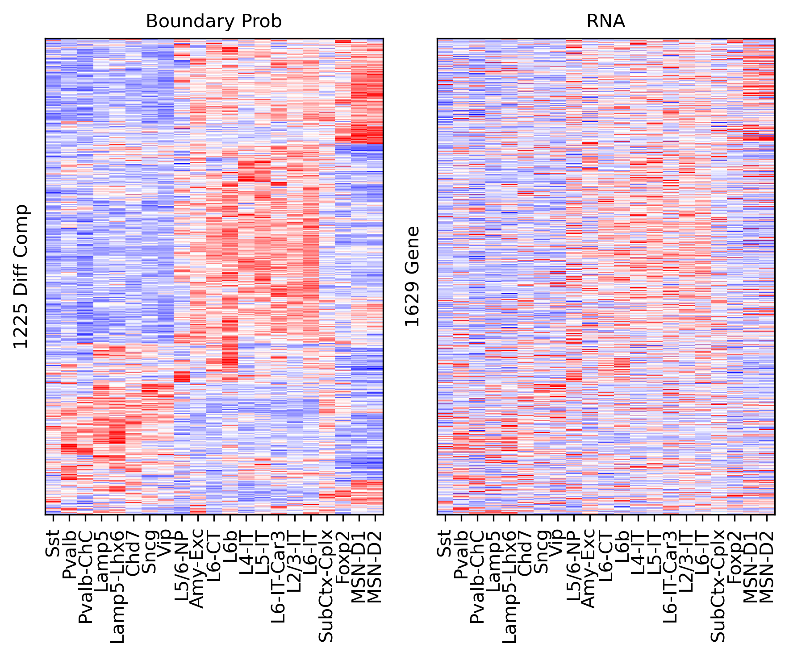
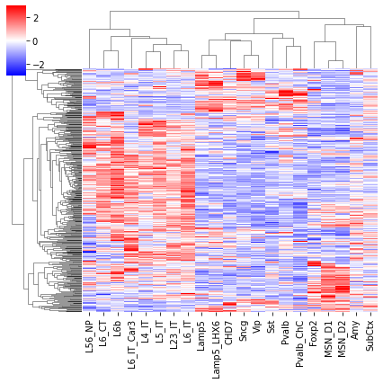
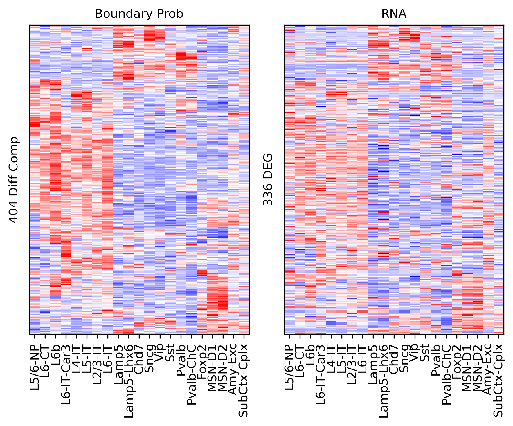

Plot correlation between boundary and mC/ATAC/RNA#
import numpy as np
import pandas as pd
from scipy.stats import pearsonr, zscore
import anndata
import matplotlib as mpl
import matplotlib.pyplot as plt
from matplotlib.patches import Polygon
from matplotlib import cm as cm
import seaborn as sns
from matplotlib.colors import LogNorm
mpl.style.use('default')
mpl.rcParams['pdf.fonttype'] = 42
mpl.rcParams['ps.fonttype'] = 42
mpl.rcParams['font.family'] = 'sans-serif'
mpl.rcParams['font.sans-serif'] = 'Helvetica'
leg = ['L23_IT', 'L4_IT', 'L5_IT', 'L6_IT', 'L6_IT_Car3', 'L56_NP', 'L6_CT', 'L6b', 'L5_ET', 'Amy',
'Lamp5', 'Lamp5_LHX6', 'Sncg', 'Vip', 'Pvalb', 'Pvalb_ChC', 'Sst', 'CHD7',
'MSN_D1', 'MSN_D2', 'Foxp2', 'SubCtx',
'ASC', 'ODC', 'OPC', 'MGC', 'PC', 'EC', 'VLMC'
]
legname = ['L2/3-IT', 'L4-IT', 'L5-IT', 'L6-IT', 'L6-IT-Car3', 'L5/6-NP', 'L6-CT', 'L6b', 'L5-ET', 'Amy-Exc',
'Lamp5', 'Lamp5-Lhx6', 'Sncg', 'Vip', 'Pvalb', 'Pvalb-ChC', 'Sst', 'Chd7',
'MSN-D1', 'MSN-D2', 'Foxp2', 'SubCtx-Cplx',
'ASC', 'ODC', 'OPC', 'MGC', 'PC', 'EC', 'VLMC'
]
leg2name = {xx:yy for xx,yy in zip(leg, legname)}
leg = {'exc': ['L23_IT', 'L4_IT', 'L5_IT', 'L6_IT', 'L6_IT_Car3', 'L56_NP', 'L6_CT', 'L6b', 'Amy'],
'inh': ['Lamp5', 'Lamp5_LHX6', 'Sncg', 'Vip', 'Pvalb', 'Pvalb_ChC', 'Sst', 'CHD7'],
'msn': ['MSN_D1', 'MSN_D2', 'Foxp2'],
'sub': ['SubCtx'],
'glia': ['ASC', 'ODC', 'OPC'],
'mgc': ['MGC'],
'smc': ['PC'],
'endo': ['EC'],
'fibro': ['VLMC'],
}
leg['neu'] = leg['exc'] + leg['inh'] + leg['msn'] + leg['sub']
leg['all'] = leg['neu'] + leg['glia'] + leg['mgc'] + leg['smc'] + leg['endo'] + leg['fibro']
group_name = 'neu'
leg = pd.Index(leg[group_name])
legname = leg.map(leg2name)
res = 25000
indir = '/data/hba/domain_majortype/'
outdir = f'/home/jzhou_salk_edu/sky_workdir/hba/domain_majortype/diff/{group_name}/'
outdir = './'
boundcg = pd.read_hdf(f'{outdir}bound_mCG.hdf', key='data')
boundch = pd.read_hdf(f'{outdir}bound_mCH.hdf', key='data')
boundatac = pd.read_hdf(f'{outdir}bound_ATAC.hdf', key='data')
legatac = boundatac.columns
bound_count_ct = pd.read_hdf(f'{indir}MajorType_boundcount.hdf', key='data').loc[leg]
cell_count_ct = pd.read_csv(f'{indir}MajorType_cellcount.csv.gz', index_col=0, header=0, squeeze=True).loc[leg]
bound_prob_ct = (bound_count_ct / cell_count_ct[:,None]).T
binall = pd.read_hdf('bin_stats.hdf', key='data')
selb = (binall['chi2filter'] & binall['diff_sc'] & binall['bklfilter'] & binall['ins_lm'] & (binall['probdiff']>0.05))
print(sum(selb))
1720
tmpcg = boundcg.astype(float).loc[selb].values
tmpcg = zscore(tmpcg, axis=1)
tmpch = boundch.astype(float).loc[selb].values
tmpch = zscore(tmpch, axis=1)
tmpatac = boundatac.astype(float).loc[selb].values
tmpatac = zscore(tmpatac, axis=1)
tmp3c = bound_prob_ct.loc[selb].values
tmp3c = zscore(tmp3c, axis=1)
cg = sns.clustermap(tmp3c, cmap='bwr', vmin=-3, vmax=3, metric='cosine', xticklabels=leg, yticklabels=[], figsize=(6,6))
findfont: Font family ['sans-serif'] not found. Falling back to DejaVu Sans.
findfont: Generic family 'sans-serif' not found because none of the following families were found: Helvetica
rorder = cg.dendrogram_row.reordered_ind.copy()
corder = cg.dendrogram_col.reordered_ind.copy()
idxatac = np.arange(len(leg))[leg.isin(legatac)]
corderatac = [xx for xx in corder if xx in idxatac]
fig, axes = plt.subplots(1, 4, sharey='all', figsize=(12,5), dpi=300)
ax = axes[0]
ax.imshow(tmp3c[np.ix_(rorder, corder)], cmap='bwr', aspect='auto', vmin=-3, vmax=3, interpolation='none')
ax.set_title('Boundary Prob', fontsize=10)
# sns.despine(ax=ax, left=True, bottom=True)
ax.set_xticks(np.arange(len(leg)))
ax.set_xticklabels(legname[corder], rotation=90)
ax.set_yticks([])
ax.set_ylabel(f'{tmp3c.shape[0]} Diff Boundary')
ax = axes[1]
ax.imshow(tmpatac[np.ix_(rorder, corderatac)], cmap='bwr', aspect='auto', vmin=-3, vmax=3, interpolation='none')
ax.set_title('ATAC', fontsize=10)
# sns.despine(ax=ax, left=True, bottom=True)
ax.set_xticks(np.arange(len(legatac)))
ax.set_xticklabels(legname[corderatac], rotation=90)
ax = axes[2]
ax.imshow(tmpcg[np.ix_(rorder, corder)], cmap='bwr', aspect='auto', vmin=-3, vmax=3, interpolation='none')
ax.set_title('mCG', fontsize=10)
# sns.despine(ax=ax, left=True, bottom=True)
ax.set_xticks(np.arange(len(leg)))
ax.set_xticklabels(legname[corder], rotation=90)
ax = axes[3]
ax.imshow(tmpch[np.ix_(rorder, corder)], cmap='bwr', aspect='auto', vmin=-3, vmax=3, interpolation='none')
ax.set_title('mCH', fontsize=10)
# sns.despine(ax=ax, left=True, bottom=True)
ax.set_xticks(np.arange(len(leg)))
ax.set_xticklabels(legname[corder], rotation=90)
plt.tight_layout()
# plt.savefig(f'majortype_{group_name}_diffbound_3C_Epi.pdf', transparent=True)

fig, ax = plt.subplots(figsize=(2,2), dpi=300)
sns.violinplot([binall.loc[selb, 'mCG_corr'],
binall.loc[selb, 'mCH_corr'],
binall.loc[selb, 'ATAC_corr']], ax=ax)
ax.set_xticklabels(['mCG', 'mCH', 'ATAC'])
ax.set_ylabel('PCC with Comp Score')
# plt.savefig(f'majortype_{group_name}_diffbound_epicorr.pdf', transparent=True)
Text(0, 0.5, 'PCC with Comp Score')

print(binall.loc[selb, 'mCG_corr'].median(),
binall.loc[selb, 'mCH_corr'].median(),
binall.loc[selb, 'ATAC_corr'].median(),
selb.sum()
)
-0.23891224792565977 -0.3763989220670755 0.2403007736648618 1720
TSS stats vs corr#
binall = binall.loc[binall['bklfilter'] & (binall['probdiff']>0)]
binall
| chrom | start | end | bklfilter | chi2filter | ins_lm | probdiff | chi2_sc | insfc | diff_sc | mCG_corr | mCH_corr | ATAC_corr | |
|---|---|---|---|---|---|---|---|---|---|---|---|---|---|
| chr1_34 | chr1 | 850000 | 875000 | True | False | 0 | 0.001558 | 11.570785 | 0.281549 | 0 | 0.484103 | 0.355741 | -0.332018 |
| chr1_35 | chr1 | 875000 | 900000 | True | False | 0 | 0.007333 | 17.110812 | 0.258256 | 0 | -0.663989 | 0.268799 | 0.316048 |
| chr1_36 | chr1 | 900000 | 925000 | True | False | 0 | 0.019086 | 36.136662 | 0.247746 | 0 | -0.188664 | 0.174081 | -0.036786 |
| chr1_37 | chr1 | 925000 | 950000 | True | False | 0 | 0.022342 | 45.028810 | 0.244715 | 0 | -0.539621 | -0.432163 | 0.519192 |
| chr1_38 | chr1 | 950000 | 975000 | True | False | 0 | 0.021296 | 28.239344 | 0.252528 | 0 | 0.000574 | -0.178776 | 0.467298 |
| ... | ... | ... | ... | ... | ... | ... | ... | ... | ... | ... | ... | ... | ... |
| chr22_2018 | chr22 | 50450000 | 50475000 | True | False | 0 | 0.032081 | 45.797538 | 0.407091 | 0 | 0.418948 | -0.172765 | -0.349786 |
| chr22_2019 | chr22 | 50475000 | 50500000 | True | False | 0 | 0.047843 | 54.166764 | 0.393158 | 0 | 0.330239 | -0.480359 | 0.063941 |
| chr22_2020 | chr22 | 50500000 | 50525000 | True | False | 1 | 0.050676 | 59.499545 | 0.374385 | 0 | 0.191173 | -0.305744 | 0.146097 |
| chr22_2021 | chr22 | 50525000 | 50550000 | True | False | 1 | 0.058912 | 61.681386 | 0.356571 | 1 | -0.222545 | -0.253223 | 0.409311 |
| chr22_2022 | chr22 | 50550000 | 50575000 | True | False | 0 | 0.038865 | 32.520812 | 0.340293 | 0 | 0.255620 | 0.021299 | -0.030856 |
100624 rows 13 columns
expr = pd.read_hdf('/home/jzhou_salk_edu/sky_workdir/hba/rna_majortype/cluster_expr.hdf')
stats = pd.read_hdf(f'/home/jzhou_salk_edu/sky_workdir/hba/rna_majortype/{group_name}_deg_stats.hdf')
genefilter = (stats['stats']>0)
expr = expr.loc[:, genefilter]
stats = stats.loc[genefilter]
data = pd.read_csv(f'/home/jzhou_salk_edu/sky_workdir/hba/ref/hg38.main.5kbin.TSS.slop2k.txt', sep='\t', header=None, index_col=None)
data = data.loc[(data[1] % res)!=10000]
data['bin_id'] = data[0] + '_' + ((data[1] + 10000) // res).astype(str)
data = data.rename({6:'gene_id'}, axis=1)
data = data[['bin_id', 'gene_id']].drop_duplicates()
data = data.loc[(data['bin_id'].isin(binall.index)) & (data['gene_id'].isin(stats.index))]
data['chi2'] = binall.loc[data['bin_id'].values, 'chi2_sc'].values
data['kruskal'] = stats.loc[data['gene_id'].values, 'stats'].values
tmp3c = bound_prob_ct.loc[data['bin_id'].values].values
tmp3c = zscore(tmp3c, axis=1)
tmprna = expr.loc[leg, data['gene_id'].values].T.values
tmprna = zscore(tmprna, axis=1)
data['corr'] = [pearsonr(xx, yy)[0] for xx,yy in zip(tmp3c, tmprna)]
fig, ax = plt.subplots(figsize=(3.5,3), dpi=300)
sns.histplot(data, x='chi2', y='kruskal', bins=100, ax=ax, log_scale=(10,10))
<AxesSubplot:xlabel='chi2', ylabel='kruskal'>
data['chi2_group'], groupM = pd.cut(zscore(np.log10(data['chi2'])), 100, labels=False, retbins=True)
data['kruskal_group'], groupK = pd.cut(zscore(np.log10(data['kruskal'])), 100, labels=False, retbins=True)
tmp = data.groupby(['chi2_group','kruskal_group'])['corr'].mean()
groupcorr = np.zeros((100, 100)) / 0
groupcorr[(tmp.index.get_level_values('kruskal_group'), tmp.index.get_level_values('chi2_group'))] = tmp.values
tmp = data.groupby(['chi2_group','kruskal_group'])['corr'].count()
groupcount = np.zeros((100, 100))
groupcount[(tmp.index.get_level_values('kruskal_group'), tmp.index.get_level_values('chi2_group'))] = tmp.values + 1
cmap = mpl.cm.bwr
cmap.set_bad('black', 1.0)
fig, axes = plt.subplots(1, 2, figsize=(6,3), sharex='all', sharey='all', dpi=300)
ax = axes[0]
plot = ax.imshow(groupcorr, vmin=-0.8, vmax=0.8, cmap=cmap)
cbar = fig.colorbar(plot, ax=ax, shrink=0.5, fraction=0.1)
cbar.set_ticks([-0.8, 0.8])
ax.set_xlabel('Zscore Chi2')
ax.set_ylabel('Zscore Kruskal')
ax = axes[1]
plot = ax.imshow(groupcount, cmap='Reds', norm=LogNorm(vmin=1))
fig.colorbar(plot, ax=ax, shrink=0.5, fraction=0.1)
ax.set_xticks(np.arange(-0.5, 100.5, 20))
ax.set_yticks(np.arange(-0.5, 100.5, 20))
ax.set_xticklabels(np.around(groupM[np.arange(0,100.5,20).astype(int)], decimals=1))
ax.set_yticklabels(np.around(groupK[np.arange(0,100.5,20).astype(int)], decimals=1))
ax.set_xlabel('Zscore Chi2')
plt.tight_layout()
# plt.savefig(f'majortype_{group_name}_bound_rna_stats_tss_corr.pdf', transparent=True)

Differential Loop vs All Gene TSS#
corr_all = []
selp = data['bin_id'].isin(selb.index[selb])
data = data.loc[selp]
tmp3c = tmp3c[selp]
tmprna = tmprna[selp]
cg = sns.clustermap(tmp3c, cmap='bwr', vmin=-3, vmax=3, metric='cosine', xticklabels=leg, yticklabels=[], figsize=(6,6))

rorder = cg.dendrogram_row.reordered_ind.copy()
corder = cg.dendrogram_col.reordered_ind.copy()
fig, axes = plt.subplots(1, 2, sharey='all', figsize=(6,5), dpi=300)
ax = axes[0]
ax.imshow(tmp3c[np.ix_(rorder, corder)], cmap='bwr', aspect='auto', vmin=-3, vmax=3, interpolation='none')
ax.set_title('Boundary Prob', fontsize=10)
# sns.despine(ax=ax, left=True, bottom=True)
ax.set_xticks(np.arange(len(leg)))
ax.set_xticklabels(legname[corder], rotation=90)
ax.set_yticks([])
ax.set_ylabel(f'{np.unique(data["bin_id"]).shape[0]} Diff Bound')
ax = axes[1]
ax.imshow(tmprna[np.ix_(rorder, corder)], cmap='bwr', aspect='auto', vmin=-3, vmax=3, interpolation='none')
ax.set_title('RNA', fontsize=10)
# sns.despine(ax=ax, left=True, bottom=True)
ax.set_xticks(np.arange(len(leg)))
ax.set_xticklabels(legname[corder], rotation=90)
ax.set_ylabel(f'{np.unique(data["gene_id"]).shape[0]} Gene')
plt.tight_layout()
# plt.savefig(f'majortype_{group_name}_diffbound_3C_RNA_alltss.pdf', transparent=True)

corr_all.append(data['corr'].values)
Differential Loop vs DEG TSS#
from scipy.stats import rankdata
deg = np.zeros(genefilter.shape[0])
for i in range(len(leg)-1):
for j in range(i+1, len(leg)):
tmp = np.load(f'/home/jzhou_salk_edu/sky_workdir/hba/rna_majortype/DEG/{leg[i]}-{leg[j]}.npz')
# deg[np.logical_and(np.abs(tmp['fc'])>1, tmp['fdr']<1e-3)] = 1
rank = rankdata(tmp['fdr'])
deg[rank<=100] = 1
print(deg.sum())
1131.0
tmp = anndata.read_h5ad('/home/jzhou_salk_edu/sky_workdir/hba/rna_majortype/cell_29000_rna.h5ad')
tmp.var['DEG'] = deg.copy()
# ((tmp.var['chrom'].isin(chrom_sizes.index)) & (tmp.var['DEG']==1) & genefilter).sum()
selp = data['gene_id'].isin(genefilter.index[deg==1])
data = data.loc[selp]
tmp3c = tmp3c[selp]
tmprna = tmprna[selp]
cg = sns.clustermap(tmp3c, cmap='bwr', vmin=-3, vmax=3, metric='cosine', xticklabels=leg, yticklabels=[], figsize=(6,6))

rorder = cg.dendrogram_row.reordered_ind.copy()
corder = cg.dendrogram_col.reordered_ind.copy()
fig, axes = plt.subplots(1, 2, sharey='all', figsize=(6,5), dpi=300)
ax = axes[0]
ax.imshow(tmp3c[np.ix_(rorder, corder)], cmap='bwr', aspect='auto', vmin=-3, vmax=3, interpolation='none')
ax.set_title('Boundary Prob', fontsize=10)
# sns.despine(ax=ax, left=True, bottom=True)
ax.set_xticks(np.arange(len(leg)))
ax.set_xticklabels(legname[corder], rotation=90)
ax.set_yticks([])
ax.set_ylabel(f'{np.unique(data["bin_id"]).shape[0]} Diff Comp')
ax = axes[1]
ax.imshow(tmprna[np.ix_(rorder, corder)], cmap='bwr', aspect='auto', vmin=-3, vmax=3, interpolation='none')
ax.set_title('RNA', fontsize=10)
# sns.despine(ax=ax, left=True, bottom=True)
ax.set_xticks(np.arange(len(leg)))
ax.set_xticklabels(legname[corder], rotation=90)
ax.set_ylabel(f'{np.unique(data["gene_id"]).shape[0]} DEG')
plt.tight_layout()
# plt.savefig(f'majortype_{group_name}_diffbound_3C_RNA_degtss.pdf', transparent=True)

corr_all.append(data['corr'].values)
Gene body stats vs corr#
expr = pd.read_hdf('/home/jzhou_salk_edu/sky_workdir/hba/rna_majortype/cluster_expr.hdf')
stats = pd.read_hdf(f'/home/jzhou_salk_edu/sky_workdir/hba/rna_majortype/{group_name}_deg_stats.hdf')
genefilter = (stats['stats']>0)
expr = expr.loc[:, genefilter]
stats = stats.loc[genefilter]
data = pd.read_csv(f'/home/jzhou_salk_edu/sky_workdir/hba/ref/hg38.main.5kbin.gene.slop2k.txt', sep='\t', header=None, index_col=None)
data = data.loc[(data[1] % res)!=10000]
data['bin_id'] = data[0] + '_' + ((data[1] + 10000) // res).astype(str)
data = data.rename({6:'gene_id'}, axis=1)
data = data[['bin_id', 'gene_id']].drop_duplicates()
data = data.loc[(data['bin_id'].isin(binall.index)) & (data['gene_id'].isin(stats.index))]
data['chi2'] = binall.loc[data['bin_id'].values, 'chi2_sc'].values
data['kruskal'] = stats.loc[data['gene_id'].values, 'stats'].values
tmp3c = bound_prob_ct.loc[data['bin_id'].values].values
tmp3c = zscore(tmp3c, axis=1)
tmprna = expr.loc[leg, data['gene_id'].values].T.values
tmprna = zscore(tmprna, axis=1)
data['corr'] = [pearsonr(xx, yy)[0] for xx,yy in zip(tmp3c, tmprna)]
fig, ax = plt.subplots(figsize=(3.5,3), dpi=300)
sns.histplot(data, x='chi2', y='kruskal', bins=100, ax=ax, log_scale=(10,10))
<AxesSubplot:xlabel='chi2', ylabel='kruskal'>
data['chi2_group'], groupM = pd.cut(zscore(np.log10(data['chi2'])), 100, labels=False, retbins=True)
data['kruskal_group'], groupK = pd.cut(zscore(np.log10(data['kruskal'])), 100, labels=False, retbins=True)
tmp = data.groupby(['chi2_group','kruskal_group'])['corr'].mean()
groupcorr = np.zeros((100, 100)) / 0
groupcorr[(tmp.index.get_level_values('kruskal_group'), tmp.index.get_level_values('chi2_group'))] = tmp.values
tmp = data.groupby(['chi2_group','kruskal_group'])['corr'].count()
groupcount = np.zeros((100, 100))
groupcount[(tmp.index.get_level_values('kruskal_group'), tmp.index.get_level_values('chi2_group'))] = tmp.values + 1
cmap = mpl.cm.bwr
cmap.set_bad('black', 1.0)
fig, axes = plt.subplots(1, 2, figsize=(6,3), sharex='all', sharey='all', dpi=300)
ax = axes[0]
plot = ax.imshow(groupcorr, vmin=-0.8, vmax=0.8, cmap=cmap)
cbar = fig.colorbar(plot, ax=ax, shrink=0.5, fraction=0.1)
cbar.set_ticks([-0.8, 0.8])
ax.set_xlabel('Zscore Chi2')
ax.set_ylabel('Zscore Kruskal')
ax = axes[1]
plot = ax.imshow(groupcount, cmap='Reds', norm=LogNorm(vmin=1))
fig.colorbar(plot, ax=ax, shrink=0.5, fraction=0.1)
ax.set_xticks(np.arange(-0.5, 100.5, 20))
ax.set_yticks(np.arange(-0.5, 100.5, 20))
ax.set_xticklabels(np.around(groupM[np.arange(0,100.5,20).astype(int)], decimals=1))
ax.set_yticklabels(np.around(groupK[np.arange(0,100.5,20).astype(int)], decimals=1))
ax.set_xlabel('Zscore Chi2')
plt.tight_layout()
# plt.savefig(f'majortype_{group_name}_bound_rna_stats_genebody_corr.pdf', transparent=True)

Differential Loop vs All Gene Body#
selp = data['bin_id'].isin(selb.index[selb])
data = data.loc[selp]
tmp3c = tmp3c[selp]
tmprna = tmprna[selp]
cg = sns.clustermap(tmp3c, cmap='bwr', vmin=-3, vmax=3, metric='cosine', xticklabels=leg, yticklabels=[], figsize=(6,6))

rorder = cg.dendrogram_row.reordered_ind.copy()
corder = cg.dendrogram_col.reordered_ind.copy()
fig, axes = plt.subplots(1, 2, sharey='all', figsize=(6,5), dpi=300)
ax = axes[0]
ax.imshow(tmp3c[np.ix_(rorder, corder)], cmap='bwr', aspect='auto', vmin=-3, vmax=3, interpolation='none')
ax.set_title('Boundary Prob', fontsize=10)
# sns.despine(ax=ax, left=True, bottom=True)
ax.set_xticks(np.arange(len(leg)))
ax.set_xticklabels(legname[corder], rotation=90)
ax.set_yticks([])
ax.set_ylabel(f'{np.unique(data["bin_id"]).shape[0]} Diff Comp')
ax = axes[1]
ax.imshow(tmprna[np.ix_(rorder, corder)], cmap='bwr', aspect='auto', vmin=-3, vmax=3, interpolation='none')
ax.set_title('RNA', fontsize=10)
# sns.despine(ax=ax, left=True, bottom=True)
ax.set_xticks(np.arange(len(leg)))
ax.set_xticklabels(legname[corder], rotation=90)
ax.set_ylabel(f'{np.unique(data["gene_id"]).shape[0]} Gene')
plt.tight_layout()
# plt.savefig(f'majortype_{group_name}_diffbound_3C_RNA_allbody.pdf', transparent=True)

corr_all.append(data['corr'].values)
Differential Loop vs DEG Gene Body#
from scipy.stats import rankdata
deg = np.zeros(genefilter.shape[0])
for i in range(len(leg)-1):
for j in range(i+1, len(leg)):
tmp = np.load(f'/home/jzhou_salk_edu/sky_workdir/hba/rna_majortype/DEG/{leg[i]}-{leg[j]}.npz')
# deg[np.logical_and(np.abs(tmp['fc'])>1, tmp['fdr']<1e-3)] = 1
rank = rankdata(tmp['fdr'])
deg[rank<=100] = 1
print(deg.sum())
1131.0
selp = data['gene_id'].isin(genefilter.index[deg==1])
data = data.loc[selp]
tmp3c = tmp3c[selp]
tmprna = tmprna[selp]
cg = sns.clustermap(tmp3c, cmap='bwr', vmin=-3, vmax=3, metric='cosine', xticklabels=leg, yticklabels=[], figsize=(6,6))

rorder = cg.dendrogram_row.reordered_ind.copy()
corder = cg.dendrogram_col.reordered_ind.copy()
fig, axes = plt.subplots(1, 2, sharey='all', figsize=(6,5), dpi=300)
ax = axes[0]
ax.imshow(tmp3c[np.ix_(rorder, corder)], cmap='bwr', aspect='auto', vmin=-3, vmax=3, interpolation='none')
ax.set_title('Boundary Prob', fontsize=10)
# sns.despine(ax=ax, left=True, bottom=True)
ax.set_xticks(np.arange(len(leg)))
ax.set_xticklabels(legname[corder], rotation=90)
ax.set_yticks([])
ax.set_ylabel(f'{np.unique(data["bin_id"]).shape[0]} Diff Comp')
ax = axes[1]
ax.imshow(tmprna[np.ix_(rorder, corder)], cmap='bwr', aspect='auto', vmin=-3, vmax=3, interpolation='none')
ax.set_title('RNA', fontsize=10)
# sns.despine(ax=ax, left=True, bottom=True)
ax.set_xticks(np.arange(len(leg)))
ax.set_xticklabels(legname[corder], rotation=90)
ax.set_ylabel(f'{np.unique(data["gene_id"]).shape[0]} DEG')
plt.tight_layout()
# plt.savefig(f'majortype_{group_name}_diffbound_3C_RNA_degbody.pdf', transparent=True)

corr_all.append(data['corr'].values)
np.save(f'{outdir}corr_diffbound_rna.npy', corr_all)
corr_all = np.load(f'{outdir}corr_diffbound_rna.npy', allow_pickle=True)[[0,2,1,3]]
xleg = [f'{xx}\n(n={yy.shape[0]})' for xx,yy in zip(['All Gene TSS', 'All Gene Body', 'DEG TSS', 'DEG Body'], corr_all)]
fig, ax = plt.subplots(figsize=(4.5,2), dpi=300)
sns.violinplot(corr_all, ax=ax)
ax.set_xticklabels(xleg)
ax.set_ylabel('PCC with Comp Score')
# plt.tight_layout()
# plt.savefig(f'majortype_{group_name}_diffbound_rnacorr.pdf', transparent=True)
Text(0, 0.5, 'PCC with Comp Score')
[[xx.shape, np.median(xx)] for xx in corr_all]
[[(710,), 0.36908752998291405],
[(1716,), 0.47118865132083876],
[(84,), 0.8121020961570051],
[(417,), 0.7439593052340755]]